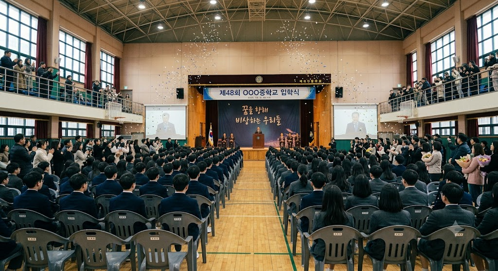

SPECIAL INVITATION
Re:Connect
Our Story Begins Again
세월이 흘러도 변하지 않는 우리들의 이야기
Re:Connect에 초대합니다.

EST.
REUNION
2032. 10. 1 (토) 오후 5시
서울 창경궁 (와룡동)
INVITATION DETAILS
DEAR CLASSMATES
소중한 동창 여러분께
“
세월이 흘러도 변하지 않는
우리들의 이야기, Re:Connect에 초대합니다.
강의실과 교정을 함께 누비며
웃고 울던 그때의 소중한 추억을 기억하시나요?
오랜만에 흩어져 있던 반가운 얼굴들이
한자리에 모여 서로의 근황을 나누고자 합니다.
맛있는 음식과 즐거운 이야기가 준비되어 있으니
부담 없이 오셔서 자리를 빛내주세요.
우리들의 특별한 하루를 기다리며
- 동창회 준비위원회 올림 -
[사진 섹션]
그 시절, 우리들의 추억
한 장씩 넘겨보며 함께했던 찬란한 순간을 떠올려보세요
좌우로 스와이프하여 부드럽게 감상하세요
[카운트다운 섹션]
그날까지 남은 시간
D-Day 계산 중...
2032년 10월 1일 (토) 오후 5:00
0000
DAYS
일
00
HOURS
시간
00
MINUTES
분
00
SECONDS
초
[지도 섹션]
오시는 길
창경궁
서울특별시 종로구 창경궁로 185 (와룡동 2-1)
창경궁 위치
지하철
4호선 혜화역 4번 출구 (도보 약 12분)
3호선 안국역 3번 출구 (도보 약 18분)
3호선 안국역 3번 출구 (도보 약 18분)
버스
창경궁·서울대학교병원 정류장 하차
간선 100, 102, 104, 106, 107, 108
간선 100, 102, 104, 106, 107, 108
주차
창경궁 공영주차장 또는 인근 대학로 유료 주차장 이용
R.S.V.P
참석 여부 전달하기
소중한 만남을 위해 참석 여부를 미리 남겨주세요